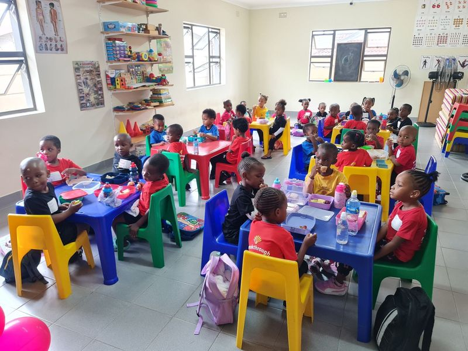
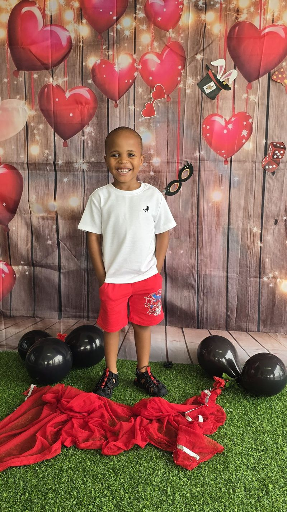
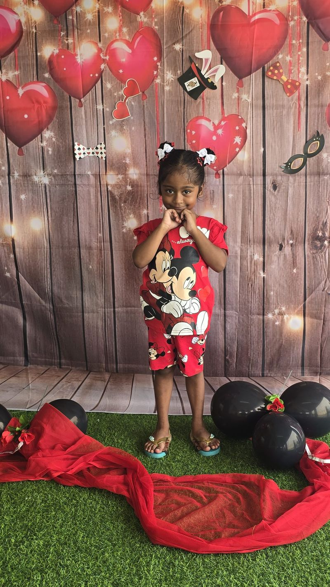
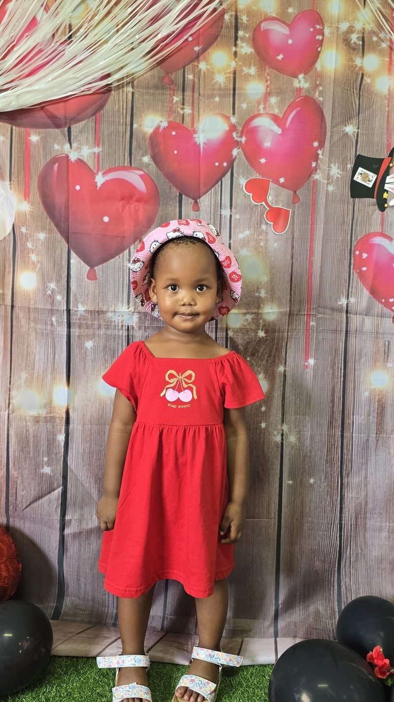
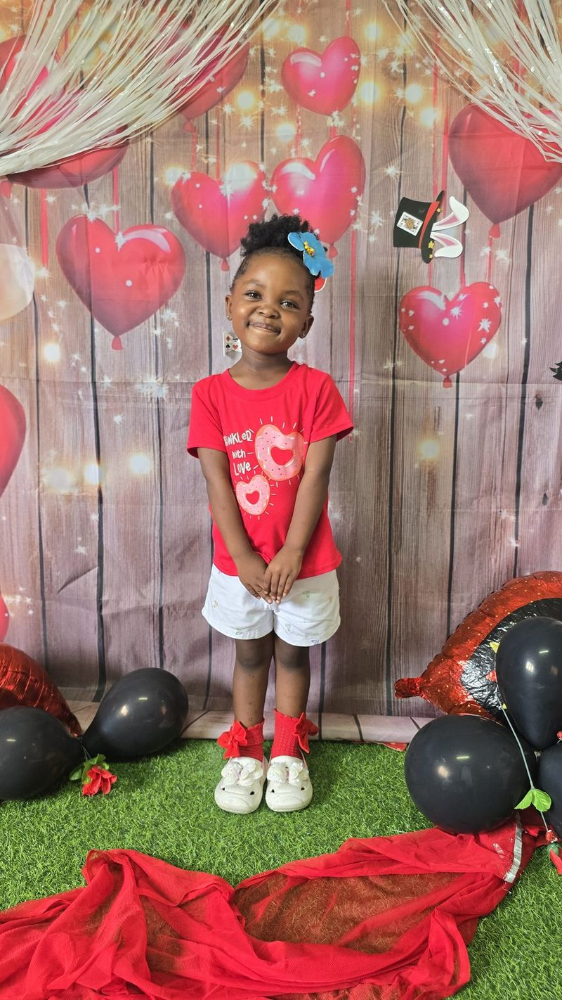
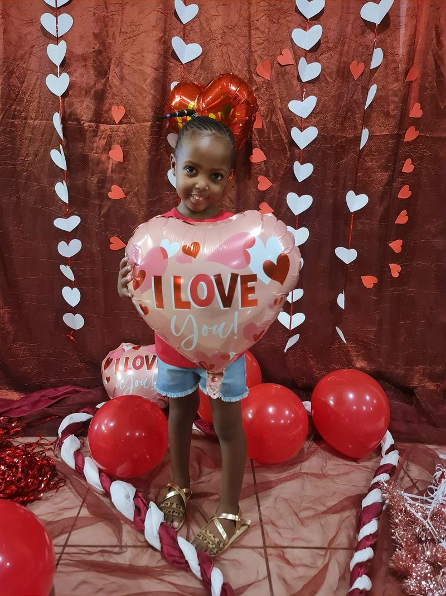
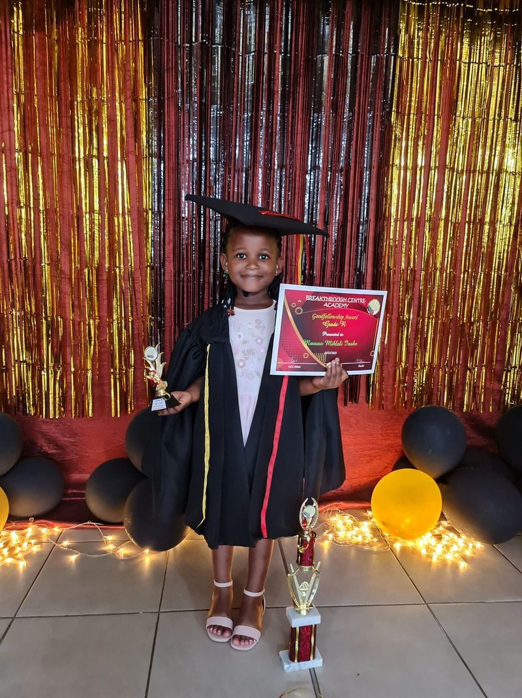

Breakthrough Centre Academy
Our preschool and early childhood development (ECD) centre in Etete, Groutville. Families from KwaDukuza, Shakaskraal and along the Dolphin Coast trust us with their little ones from the age of two.
We don't lower the bar
We opened in 2005 in a small house with four learners. We've grown quickly since then for one reason: we refuse to lower our standards. You can't lower the bar and expect excellent results, and the start a child gets here stays with them for life.
Every child follows a structured programme in Maths, Science, Languages and Life Skills. Even our two-year-olds are building their vocabulary and learning the first steps of reading and writing. Along the way we teach good manners, respect for others and healthy eating habits.
In 2021 we were also awarded the lease of a brand-new community-based crèche and pre-school in Shakaskraal.

"I can read"
I can read is a manual that builds sound reading patterns in young learners, so they have the literacy skills they need for future learning. It is part of every child's curriculum, and learners on the programme have astounded their teachers with their reading levels.
Reading, speaking and growing in confidence
Poor literacy is a national concern. Our Literacy and Language Development programme has become a model for strong results in foundational reading, mathematics and public speaking, and our learners leave with confidence and healthy self-esteem.
Dressed up for Valentine's Day 2026
Our learners love a reason to celebrate, from Heritage Day to the end-of-year function.





Parents as partners
You're part of the team. Every term we hold parent meetings where you can see your child's progress and get to know the teachers, plus free workshops on how to help your child do their best at home.
Time to shine
Every learner gets a turn on stage at our Annual Concert and Graduation: speaking, storytelling, dancing, acting and singing in front of a proud crowd.

Enrol your child
We'd love to welcome your family. WhatsApp 081 775 1488 to find out about places and registration.
Questions parents ask
What age can my child start?
We take children from the age of two.
What will my child learn?
A structured programme in Maths, Science, Languages and Life Skills, with our "I can read" programme building strong reading from the start. Every learner also takes part in our concert and graduation.
Where is the Academy?
At Breakthrough Centre, 170 Old Main Road, Etete, Groutville, Dolphin Coast, KwaZulu-Natal, near KwaDukuza (Stanger), Shakaskraal and Ballito. Since 2021 we also run a community-based creche and preschool in Shakaskraal.
How do I ask about a place?
WhatsApp 081 775 1488 and we'll let you know about places and registration.
Can parents be involved?
Yes. We hold parent meetings every term, and parents can attend free workshops on supporting their child's learning.